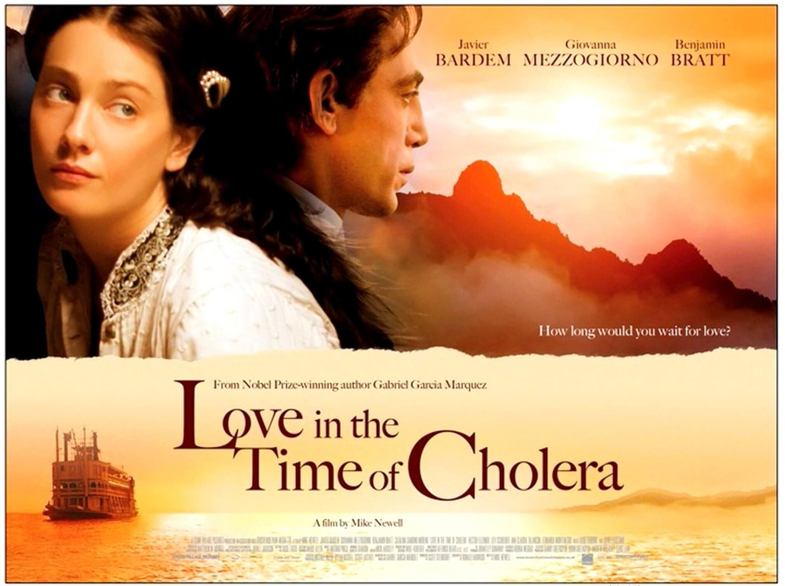

Say Something. Even If You're Shaking.
This morning, I was walking to buy breakfast when I heard Jiang Fangzhou say something that cracked my internal shell a little:
"In the internet world, it's far too easy to be a bad person. The cost is low. But it's incredibly hard to be a good one."
She was talking about Love in the Time of Cholera, not as a romantic epic—but as a long, calculated act of male self-delusion. A man rewriting his own story into something noble, when it was anything but. And I thought—why do we let these narratives stand?
There's something deeply unsettling about how often the speaker—the narrator—is already standing on a moral pedestal before we can even question them. Once the wrong person gets to speak first, it's hard to challenge their framing. Their story becomes the story.

It happens all the time online. Especially in China, where public opinion spirals through reversals and re-reversals with every trending event. One minute someone's a villain. Then a victim. Then a meme. The truth gets buried beneath a dozen edits and a hundred hot takes.
And we're left wondering: should I even speak?
The answer, I think, is yes.
Not because we're certain.
But because silence gives bad narratives free reign.
I've been avoiding speaking online.
Not because I have nothing to say, but because I've been afraid.
Afraid of trolls. Afraid of being misunderstood.
Afraid that if I speak up, someone will twist my words.
So I stay silent. I nod quietly. I log off.
But maybe that's the problem.
The fewer good people speak, the louder the bad ones sound.
Not because they're smarter. Just less afraid.
Not because they're right. Just more relentless.
So here's my vow, small but real:
I want to say more.
Leave more thoughts behind.
Even if I'm not sure they're perfect.
Even if someone might attack them.
Even if I shake while typing.
Because silence doesn't protect anyone. It just makes the wrong voices feel like the majority.
📚
On my run later, I listened to Jiang again—this time her breakdown of One Hundred Years of Solitude.
She spoke about how Márquez uses repetition to show how human fate loops and doubles back on itself.
There's a strange comfort in that.
But the most comforting thing, for me, was Jiang herself. Her voice, her care with words, her unapologetic thoughtfulness.
I highly recommend her podcast Yi Cun.
Not just for her literary insight, but for the reminder that thoughtful voices matter—and deserve to be heard.